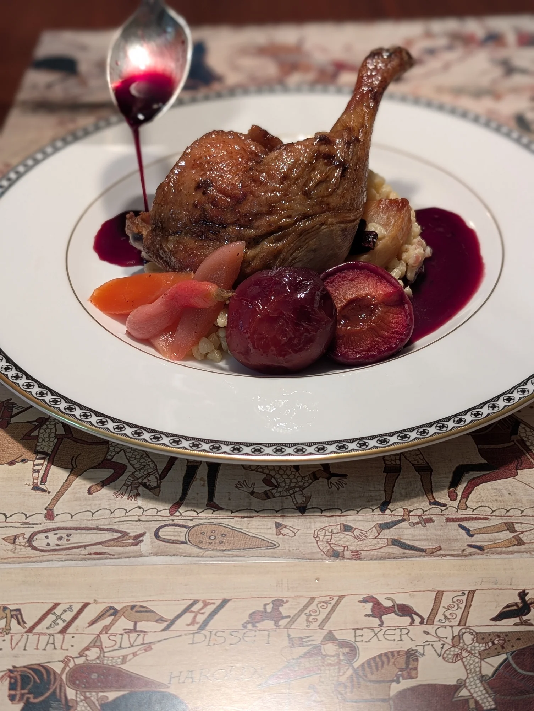

Special Exhibition · Private Commissions
London · Private Residences & N10
EPOCHURIAN
Taste History
Multi-course historical banquets staged at your own table.

Exhibit I · The Norman Conquest, 1066
Spit-Roasted Duck · Spiced Wine Jus